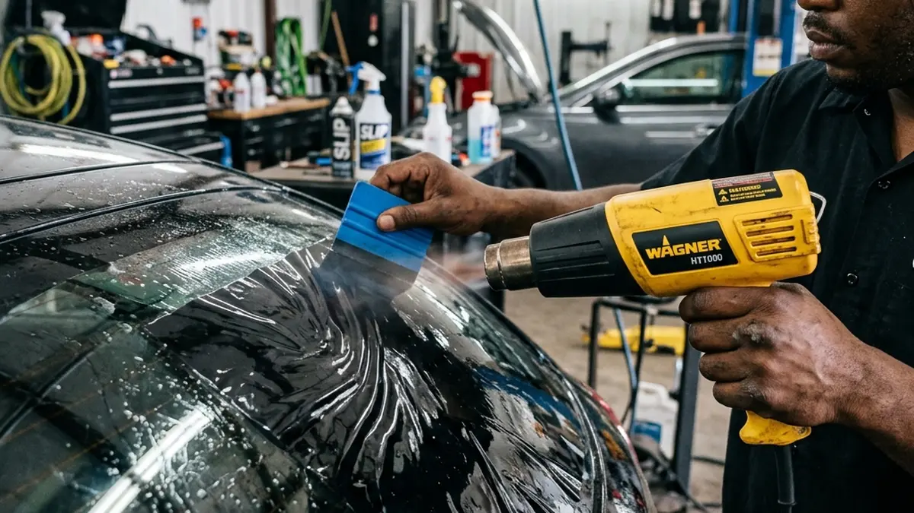

You’ve decided to tint your vehicle. Smart move. But now comes the hard part: finding the right shop. If you type "car tint shop" or "premier tinting" into Google, you'll be bombarded with dozens of options. They all claim to be the best. But the truth? The quality of a car window tint installation varies wildly from shop to shop.
Applying window film is an art form. It requires immense patience, specialized tools, and a pristine environment. Here is exactly what you should look for when choosing a shop for your vehicle.
A Clean, Enclosed Installation Bay
Dust is the enemy of window tint. If you see a shop installing tint outside in a parking lot, or in an open garage with dirt blowing around, leave immediately. A professional car tint shop operates in a completely enclosed, climate-controlled bay.
At Riverside Tints, we obsess over cleanliness. A single speck of dust caught between the glass and the film will create a permanent, glaring bubble. Our bays are meticulously maintained to ensure a flawless, factory-like finish every single time.

Computer-Cut Patterns vs. Hand-Cutting
Years ago, installers had to hand-cut film directly on the outside of your car's glass using razor blades. While highly skilled tinters could do this without scratching the glass, accidents happened. Today, any shop offering prestige auto tint services should be using computer-cut plotters.
A plotter precisely cuts the film to the exact dimensions of your vehicle's specific make and model before the film ever touches your car. This eliminates the risk of razor scratches and ensures absolute precision on every edge.
Reputation and Warranties
Finally, look at the warranty. A cheap tint shop will offer a 1-year warranty, knowing full well the film will degrade shortly after. A premier facility offering top-tier car window tint installation will provide a lifetime warranty covering bubbling, peeling, and color shifting.
Don't trust your expensive vehicle to a fly-by-night operation. Choose a shop with verified reviews, high-end ceramic films, and a commitment to perfection. That's the Riverside Tints standard.